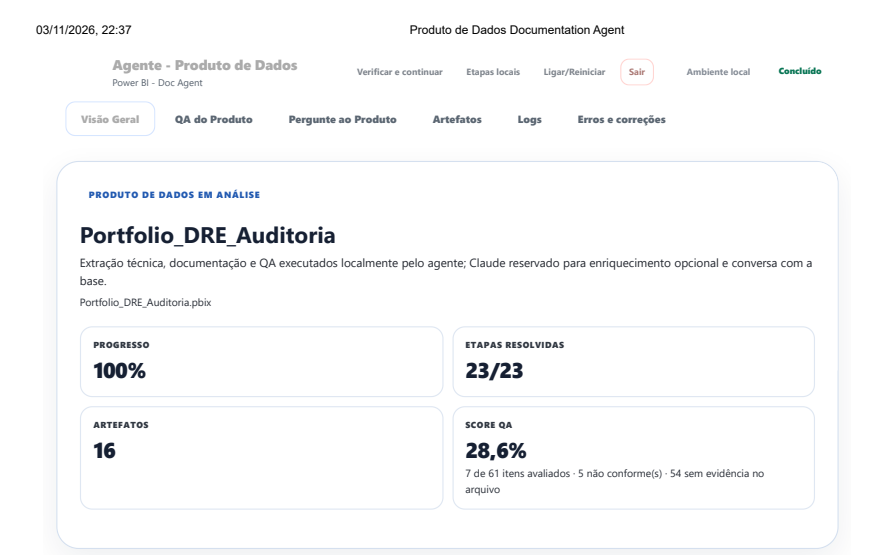
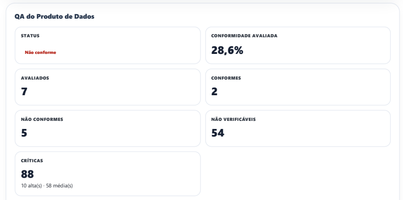

Extração e rastreabilidade
Cópia do arquivo de entrada, verificação de integridade, PBIT, metadados do modelo e do relatório. Pastas separadas por produto e execução preservam a origem de cada resultado.
Um agente local que transforma arquivos Power BI em documentação técnica, diagramas, inventário e uma base de conhecimento consultável com Claude. Um painel acompanha a execução e mostra o QA do produto com evidências e sugestões de correção.
Indicadores da captura de 03/11/2026. Concluir a documentação não significa aprovar o produto no QA.
Um relatório pode estar funcionando e ainda esconder regras DAX, dependências, origens e decisões de modelagem. Documentar tudo manualmente exige percorrer o modelo, relacionar evidências e manter os documentos sincronizados.
Uma aplicação local com orquestração Python, extração de metadados Power BI, geração documental e auditoria determinística. O Claude Code recebe contexto selecionado para interpretar o produto e responder perguntas sobre a base extraída.
Entrada PBIX / PBIT / PBIP ou pasta extraída
Pipeline local Python + pbi-tools → TMDL / PBIR / Power Query M
Conhecimento Inventário + DAX + linhagem + diagramas + base Markdown
Saídas Documentação DOCX/PDF + QA + apresentação + painel HTML
Claude sob demanda Base selecionada → enriquecimento estruturado ou resposta à pergunta
Cópia do arquivo de entrada, verificação de integridade, PBIT, metadados do modelo e do relatório. Pastas separadas por produto e execução preservam a origem de cada resultado.
Inventário técnico, tabelas, colunas, medidas e relacionamentos alimentam a base canônica Markdown. Diagramas e linhagem ajudam a explicar as dependências.
Documentação técnica, documentação de QA e apresentação para o negócio, com formatação e conversão para PDF. O painel reúne progresso, artefatos, logs e erros.
Checklist e críticas relacionam objeto, critério, evidência, severidade e sugestão. A ausência de evidência aparece como não verificável e exige revisão.
O produto demonstrativo é o Portfolio DRE Auditoria. As imagens abaixo são recortes dos PDFs fornecidos do painel, com os indicadores da execução e a visão de QA.

O QA registrou 28,6% de conformidade entre os 7 itens avaliados: 2 conformes e 5 não conformes. Outros 54 dos 61 critérios aplicáveis ficaram sem evidência suficiente no arquivo.
Foram registrados 88 apontamentos, sendo 10 de severidade alta. Esse resultado caracteriza a análise do produto de exemplo; não representa a precisão do agente.
As críticas sinalizam, por exemplo, divisões DAX sem DIVIDE e medidas sem descrição. São verificações estáticas para triagem e revisão técnica, sem comprovação automática de impacto em execução.

O modo econômico documenta sem chamadas ao Claude. Quando habilitado, o enriquecimento recebe um JSON técnico compacto e devolve conteúdo estruturado em no máximo uma chamada por produto. Python mantém a geração dos documentos.
A arquitetura prevê seleção de até seis trechos da base canônica por pergunta e uma interação de turno único com Claude Code. A conversa fica separada do pipeline documental e depende de autenticação válida.
Quais medidas compõem o resultado da DRE?
Quais dependências preciso revisar antes de alterar uma medida?
Quais pendências de documentação foram identificadas?
Exemplos de uso pretendido. Os PDFs demonstram documentação e QA; a captura não comprova uma resposta de chat nem uma chamada de enriquecimento bem-sucedida.
A separação entre extração, regras determinísticas e interpretação por IA torna o processamento menos dependente de cota e disponibilidade do modelo. A base canônica conecta a engenharia à documentação e oferece contexto reutilizável para a conversa.
As próximas evoluções são ampliar a cobertura verificável do checklist, validar respostas do chat com referências aos objetos do modelo e comparar versões para identificar mudanças no produto.
As evidências públicas usam recortes dos PDFs. Os originais permanecem locais por conterem informações de ambiente e sessão. O escopo comprovado é a execução local; publicação em SharePoint e notificações são integrações separadas.